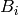
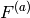
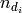
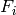

Table of Contents
HFIR single crystalreduction interface is a GUI to download, view and reduce data from HFIR’s four-circle single crystal diffractometer in SPICE format.
- Setup and Data Access: Configure the instrument name, data server URL and directories.
- Configure the instrument name;
- Set up and test HB3A data server’s URL;
- Configure the directory to save raw data;
- Configure the directory to save working result;
- Download data from server;
- View Raw Data: View 2D image of counts on detector of one measurement.
- Plot the counts of the 256 by 256 2D detector;
- Calculate UB: Calculate UB matrix.
- Find peak in one measurement;
- Option to load Miller index directly from SPICE file;
- Calculate UB matrix;
- Re-index the peaks;
- Refine UB matrix with more than two peaks.
- Merge Scan: Merge all the measurements in a scan.
- Merge all measuring points in a scan to an MDEventWorkspace in HKL-frame or Q-sample-frame;
- Allow various ways to set up UB matrix
- Peak Integration: Integrate peaks
- Still in developmenet
- Survey: Get experiments runs’ information by scanning through all SPICE files in an experiment
- For selected scans in an experiment, list the run (i.e., Pt.) with maximum detector counts in a specific scan;
- For each listed run, the information show includes detector counts and HKL
Counts of neutron on any detector shall be normalized by its corresponding monitor count and then be multiplied by a constant specified by user.
There is no existing algorithm in Mantid to integrate ellipsoid because1 algorithm IntegrateEllipsoids works only for event in unit as time-of-flight.
So far, there is only one algorithm is implemented to integrate peaks for HB3A.
This is a simple algorithm for approximate the integrated peak intensity.
Measuring one peak usually contains around 20 Pt. in a same scan. In most of the cases, the first and last several measurements (called as Pt in SPICE) are background. Therefore, the background for per measurement can be estimated by averaging the summed number of counts normalized by either monitor counts or measuring time.
For each measurment, the background  is calculated as
..math.. B_i = frac{sum^{(pt)}_{{d_i}}n_{d_i}}{F^{(a)}_{d_i}}
where  is the normlization of either time or beam monitor counts,
and  is the neutron counts of measumrent  .
.
Then the estimation of the normalized background for each measurement is
..math.. B^{(e)} = sum_{{P_i}}frac{B_i}{N}
where  is the number of measurements used to calculated background.
is the number of measurements used to calculated background.
In the Q-space, by masking each measurement, it is assumed that the peak’s intensity is very close to the number of counts in the unmasked cuboid normalized either by measuring time or beam monitor counts with background removed.
..math.. I = sum_{i} frac{n_i}{F_i} - B^{(e)}
where is the counts of Pt i in the region of interest,  is the normalization factor of Pt i, and B^{(e)} is the estimated background per Pt with the same normalization type of .
TODO/NOW - Polish this section!
This is an easy approximation to integrate a peak with background subtraction by specified region of interest.
The pre-requisit is that all events are normalized by monitor counts and scaled up by same factor (e.g, 1500).
Here are some use cases that can be used as examples.
The first step to reduce data with 4-Circle GUI is to set up the reduction environment. Reduction cannot work correctly if this step is SKIPPED.
- Go to tab Setup & Data Access;
- Set up Data Directory and Working Directory;
- An alternative way to step 2 is to push button Load Default;
- Push button Apply. Mantid thus checks whether the setup, including source data file’s URL, data directory and working directory are valid. Be noticed that the check of URL may return timeout error. It might be a false alarm. You might push the Apply button few more times.
Usually if it is the first time to reduce data for an experiment, it is recommended to go through the whole experiment to gather some information.
- Go to tab Survey;
- Set up experiment number on the top of application window;
- Input the range of the scan numbers for survey. Leaving them blank will result in going through all scans of the experiment;
- Click button Survey;
- It might take a while to load and scan all the SPICE files belonged to an individual experiment. After it is finished, the result will be shown in the table.
- Save the survey result for future by clicking button Save;
- Select a row, and click button View Peak, application will switch to tab View Raw Data automatically and set the scan and Pt number from the selected row.
Here is a typical use case to calculate UB matrix after initial setup.
- User specifies Experiment and pushes button Set
- Users may do a new survey or load a survey result file in tab Survey;
- User enters tab View Raw Data and inputs scan number and list all the measuring points (Pt.)
- User views all the measurements
- User finds out the measurement with the strongest reflection and push button use
- Alternatively, user can use the survey result to find out the Pt. with the maximum counts of the scan
- GUI shifts to tab Calculate UB automatically
- User pushes button Find Peak with checking Load HKL from file
- GUI finds the peak center and load HKL
- User pushes button Add peak to add the peak to table
- User repeats step 2 to 9 to add other peaks
- User select the peaks that are linearly independent and pushes Calcualte UB
- GUI calculates UB matrix and show the result
- User may push Index peak to use the calculated UB matrix to index peaks in the table to check UB matrix;
- User may refine the UB matrix and thus lattice parameters
- user adds more peaks to the UB peak table;
- user selects at least 3 non-degenerate peaks;
- user clicks button Refine;
- application refines UB matrix and outputs the refined UB matrix, refined lattice parameters and their error.
Here is a typical use case to merge all the measuring points (Pt.) in a scan
- User specifies Experiment and pushes button Set
- User enters tab Merge Scan
- User specifies the UB matrix either by From tab Calculate UB or by entering the values to text editor
- User pushes button Set
- User specifies the frame in which the merged data will be in. If the target frame is Q-Sample-Sapce, then there is no need to specify UB matrix
- User specifies the scan numbers and push button Add
- User specifies the base name for the output MDEventWorkspaces
- User pushes button Process
- User goes to MantidPlot to view the merged scan by SliceView or Vates.